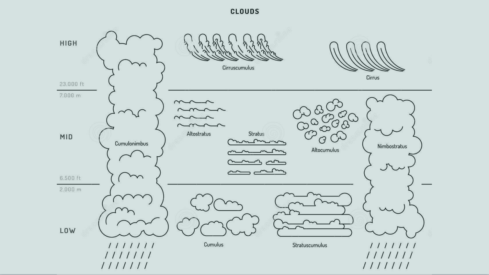
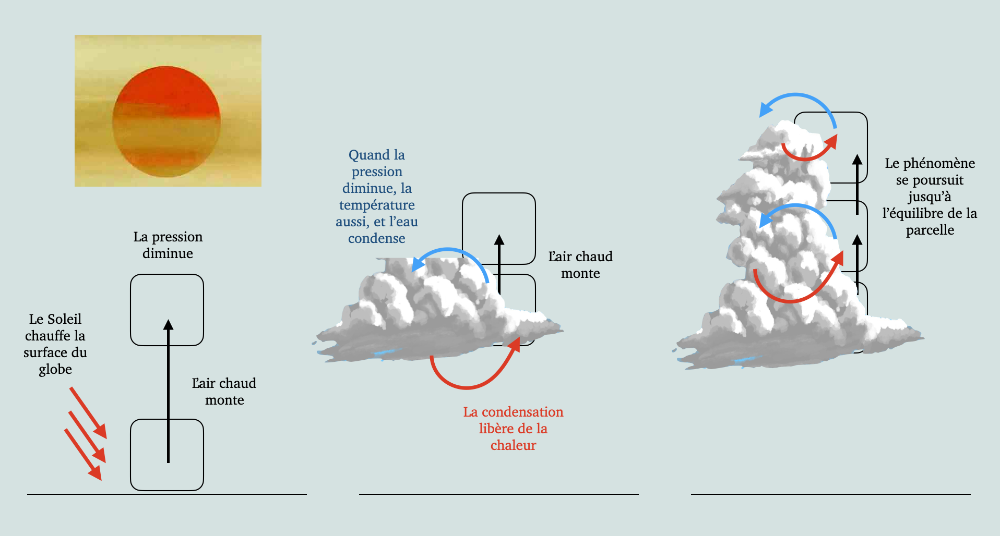

Comment se forment les nuages ?
Les nuages sont souvent associés à un sentiment de légèreté, de rêverie et d’évasion. Etonnant lorsque l’on comprend qu’ils mettent en jeu des mécanismes physiques complexes, et qu’ils jouent un rôle majeur dans la régulation du climat. Les nuages sont-ils faits de matière onirique ou d’hydrométéores en suspension ? C’est une des questions que l’on va se poser en cette Fête de la Science, organisée au Laboratoire de Météorologie Dynamique de l’ENS Paris; l’occasion de découvrir le monde de la recherche, les enjeux de la science et l’émerveillement qui l’accompagne.
Qu'est-ce qu'un nuage ?
Hydrométéore consistant en une suspension dans l’atmosphère de minuscules particules d’eau liquide ou de glace, ou les deux à la fois, ne touchant généralement pas le sol, sauf dans le cas de brouillard. Le niveau le plus bas du nuage ou d’une couche nuageuse est appelée « base ». [Météo France]
Il existe 10 genres de nuages :

- Base dans les basses couches de la troposphère (< 1500 m. environ) : Stratus (ST), Cumulus (CU), StratoCumulus (SC), Cumulonimbus (CB), Nimbostratus (NS) (ce dernier peut appartenir aussi aux nuages des couches moyennes)
- Base dans les couches moyennes de la troposphère (de 2 à 5 km en moyenne) : AltoCumulus (AC), Altostratus (AS) (cf Nimbostratus)
- Base dans les couches supérieures de la troposphère (> 6 km généralement) : Cirrus (CI), Cirrocumulus (CC), Cirrostratus (CS).
Quels sont les mécanismes à l'origine de leur formation
Les nuages sont des volumes d’air chargés de gouttelettes d’eau et/ou de cristaux, suspendus dans la troposphère. Comment ces gouttelettes sont arrivées là ?

Les mouvements d’air verticaux de la troposphère sont déclenchés par le réchauffement solaire. Ce réchauffement rend l'air moins dense, ce qui le fait monter. Quand l'air monte, la pression au-dessus de lui décroît, par conséquent il s'étend, s'opposant à la pression de l'air environnant. Or, pour s'étendre, de l'énergie est nécessaire, donc la température et la masse de l'air décroissent. Comme la température diminue, la vapeur d'eau dans la masse d'air peut se condenser ou se solidifier, relâchant la chaleur latente permettant une nouvelle élévation de la masse d’air.